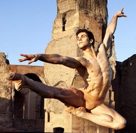

Yuri Borovich
Danseur étoile, Haltérophile et Professeur de Quidditch à mi-temps

Mon expérience
- 2010-2018: Danseur principal au Grand balet de Moscou
- 2015-? : Champion du monde d'Haltérophilie catégorie poids légers
- 1918-2018: Professeur de Quidditch à Poudlard
Mes compétences
- Faire le grand écart
- Soulever 400kg de fonte en développé-couché
- Etre invincible au Quidditch, ma tactique?
- Subtiliser le vif d'or
- Le mettre dans les but
- Réitérer et donner quelques coups de balais si besoin
Ma formation
- Master en stéroïdes appliqués
- CACES option BICEPS
- Le Bolchoï, l'école de la vie
Clicker ici pour pas se fatiguer à remonter la page: Merci :)